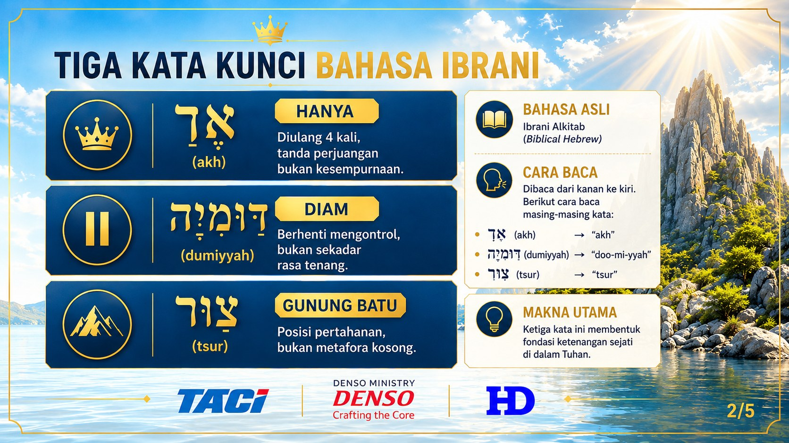
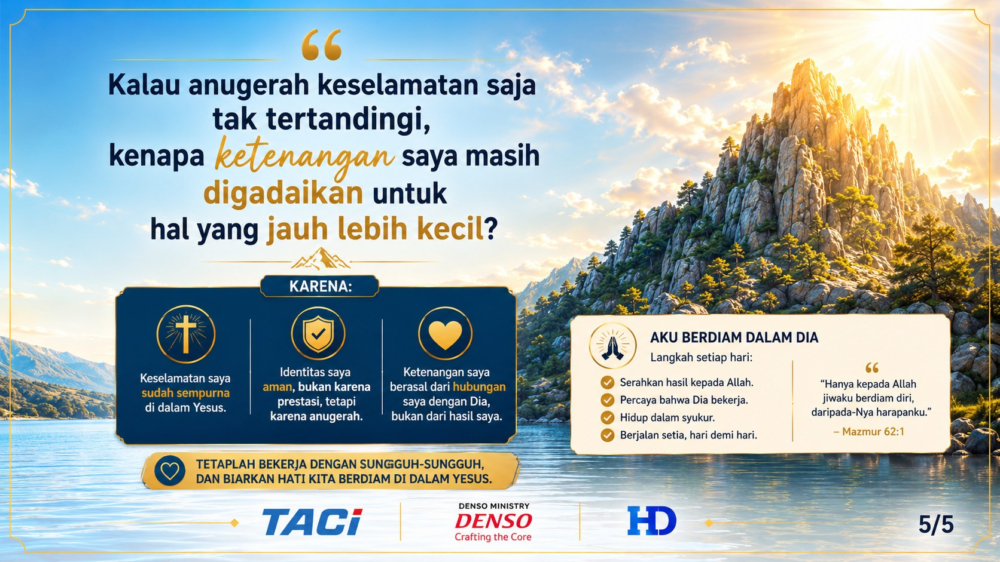
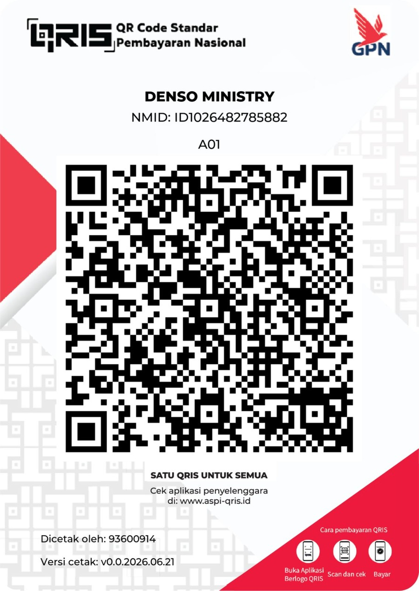

"KETENANGAN HANYA DI DALAM YESUS."
Mazmur 62:1-5| Jumat, 14 Agustus 2026 · 17.30 WIB | Auditorium Bekasi Plant |
"KETENANGAN HANYA DI DALAM YESUS."
Mazmur 62:1–5


Satu Hati • Satu Iman • Satu Tujuan
Tuhan Yesus Memberkati